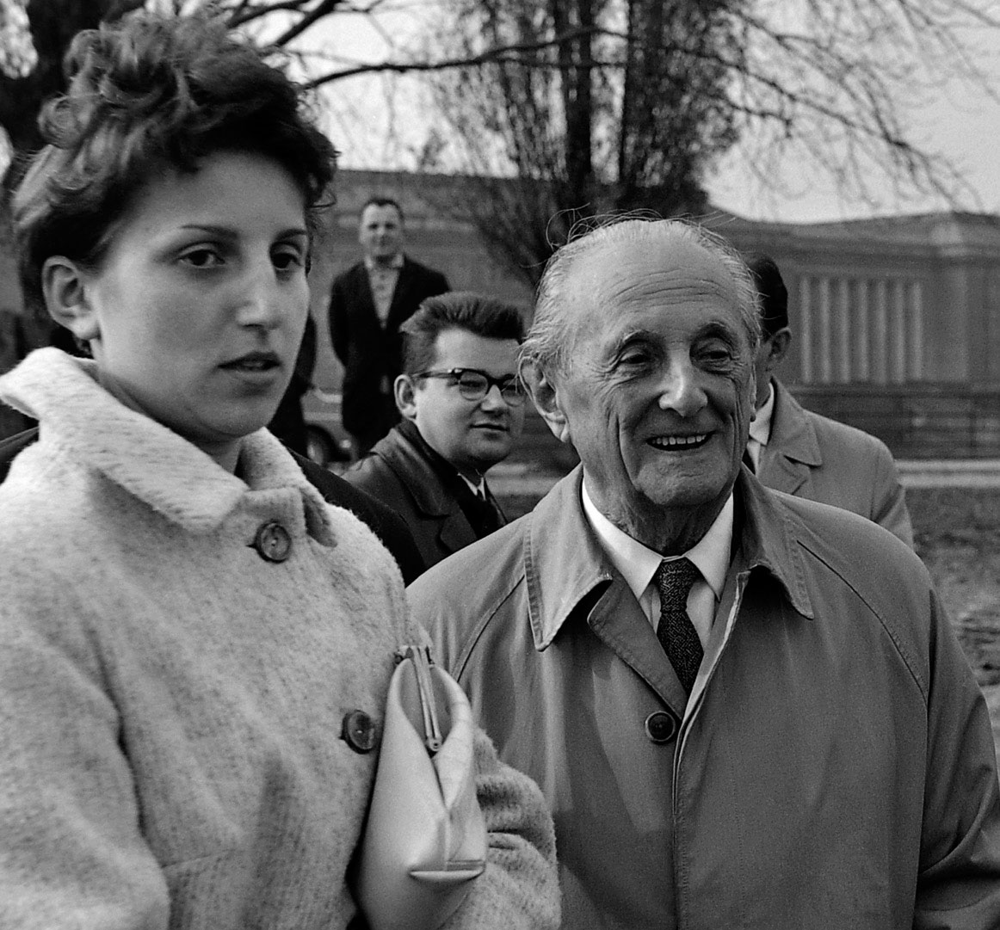
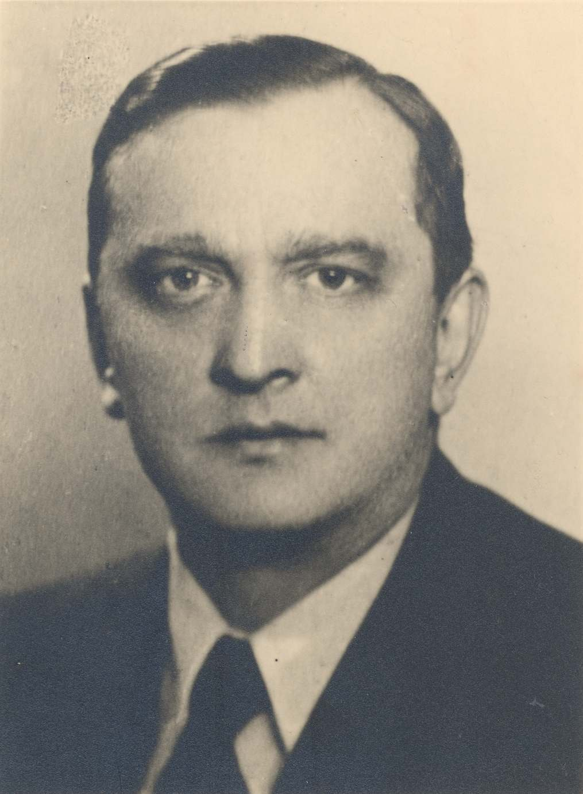
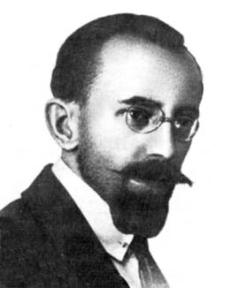

POLSCY MATEMATYCY
HUGO STEINHAUS

Informacje ogólne:
HUGO STEINHAUS (1887- 1972)
• Autor ponad 170 prac i książek z dziedziny analizy matematycznej, teorii prawdopodobieństwa, statystyki matematycznej i jej zastosowań.
• Pionier w dziedzinie matematyki. Tworzył podstawy teorii gier, analizy funkcjonalnej i teorii prawdopodobieństwa,
które w późniejszych latach był rozwinięte i usystematyzowane przez m. in. John von Neumann' a.
• Współtwórca tzw. lwowskiej szkoły matematyki.
• Odkrywca matematycznych talentów, w tym Stefana Banacha.
• Autor takich pozycji jak: „Kalejdoskop matematyczny”, „Między duchem a materią pośredniczy matematyka”, „Orzeł czy reszka?”,
„Słownik racjonalny” oraz „100 problemów w matematyce elementarnej”.
• Założyciel czasopism Studia Mathematica (wraz z S. Banachem).
WIĘCEJ INFORMACJI UKAŻE SIĘ PO KLIKNIĘCI W FOTOGRAFIĘ
STEFAN BANACH

Informacje ogólne:
STEFAN BANACH (1892-1945)
• Wybitny polski matematyk, uważany za jednego z najważniejszych i najbardziej wpływowych matematyków dwudziestego wieku.
• Autor ponad 60 prac naukowych i twórca wielu twierdzeń o fundamentalnym znaczeniu dla wielu działów matematyki.
• Współtwórca tzw. lwowskiej szkoły matematycznej.
• Członek-korespondent Polskiej Akademii Umiejętności, członek Towarzystwa Naukowego Warszawskiego i Lwowskiego,
członek założyciel (a później prezes) Polskiego Towarzystwa Matematycznego, wiceprzewodniczący Komitetu Matematycznego Rady Nauk Ścisłych i Stosowanych.
• Założyciel czasopism Studia Mathematica (wraz z Hugo Steinhausem).
WIĘCEJ INFORMACJI UKAŻE SIĘ PO KLIKNIĘCI FOTOGRAFIĘ
OTTON NIKODYM

Informacje ogólne:
OTTON NIKODYM (1889–1974)
• Polski matematyk uznany za wkład w rozwój teorii miary, analizy funkcjonalnej, równań rożniczkowych i opisowej teorii mnogości.
• Jeden z założycili Polskiego Towarzystwa Matematycznego w 1919 roku.
• Członek Polskiego Towzrzystwa Naukowego na Obczyźnie (od 1960 roku).
• Znany dydaktyk i popularyzator matematyki.
• Autor szeregu audycji radiowych o matematyce.
WIĘCEJ INFORMACJI UKAŻE SIĘ PO KLIKNIĘCI W FOTOGRAFIĘ
Bibligrafia